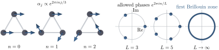

Advanced Quantum Materials 2027 · All lectures · Lecture notes
Session 2. Symmetries, Tight-Binding Band Structure Theory, and Effective Models
2.4 Exercises where we guess eigenstates from symmetry only
We will now see with a sequence of small examples how much (2.3) gives us. In each example we add sites, and at the end we take the infinite limit.
Three sites on a ring. We take a tight-binding Hamiltonian on three sites in a triangle, with a symmetry \(R\) that rotates \(1\to2\to3\to1\) by \(120^\circ\). Since \(R^3=\mathbb{1}\), any eigenvalue \(\lambda=e^{i\varphi}\) of \(R\) must satisfy \(\lambda^3=1\), so
\[\varphi_n = \frac{2\pi n}{3}, \qquad n=0,1,2. \tag{2.4}\]
So we know a lot about the eigenstates of \(H\) before we write \(H\) explicitly. They must have the form \(\alpha_1c_1^\dagger+\alpha_2c_2^\dagger+\alpha_3c_3^\dagger\). Since \(R\) permutes the sites in a cyclic way and multiplies the whole state by \(e^{i\varphi_n}\), the coefficients must have the same phase from one site to the next, \(\alpha_j\propto e^{i\varphi_n j}\). The eigenstates of any Hamiltonian with this rotational symmetry are exactly the three discrete Fourier modes on the ring, regardless of the values of the hopping amplitudes. Figure 2.1 shows the three modes explicitly, and it also shows how the set of allowed phases changes when the ring becomes larger.

Five sites on a ring. The same argument on a five-site ring with nearest-neighbour hopping, \(H=\sum_{\langle ij\rangle} c_i^\dagger c_j\), gives \(\varphi_n=2\pi n/5\), \(n=0,\dots,4\), and the eigenstates \(|\Psi_n\rangle \propto \sum_{j=0}^4 e^{i\varphi_n j}\,c_j^\dagger|0\rangle\). With this we can already answer a quantitative question without diagonalizing anything. Let us ask what the weight of site 1 is in the lowest-energy eigenstate built from the vacuum \(|\Omega\rangle\), in the sense of the overlap \(\big|\langle\Omega|c_1\Psi_{\rm GS}^\dagger|\Omega\rangle\big|^2\). Every \(|\Psi_n\rangle\) is a superposition over all five sites with the same modulus on each site, so this overlap is \(1/5\) for every \(n\), for the lowest energy and for all other states. This follows from the symmetry only, and it does not depend on the specific hopping amplitudes. The same argument stays valid if the nearest-neighbour hopping is replaced by any long-range hopping, and a six-site ring with additional long-range couplings shows the same thing. As long as the rotational symmetry of the ring is present, the symmetry eigenvalues, the eigenstates and expectation values such as this one are all fixed by symmetry only, however complicated the Hamiltonian becomes.
Note that such models with few sites are not only of academic interest. With scanning tunnelling microscopy one can place single atoms with essentially arbitrary precision, and tight-binding rings with few sites like these have been built and measured in this way. There is a famous stop-motion film made only from atoms moved with STM, which is sometimes called “the smallest film ever made,” where every dot on the screen is a single atom. It shows how precisely such models can now be realized in the lab.
The infinite chain. Now we let the ring grow without limit, so that it becomes an infinite one-dimensional chain with nearest-neighbour hopping. The relevant symmetry is a translation by one site, \(T: c_n^\dagger \to c_{n-1}^\dagger\), which shifts a wavefunction \(\psi_n\) on the sites to \(\psi_{n+1}\), and \([H,T]=0\) for any Hamiltonian that only has hoppings that depend on the distance between sites and not on the absolute position. By Section 2.3, \(H\) and \(T\) have a common eigenbasis, and by (2.2) the eigenvalue of \(T\) in this common eigenbasis is a pure phase \(e^{i\varphi}\). This \(\varphi\) is called the Bloch phase. The statement that \(H\) and \(T\) have a common eigenbasis, when we apply it to a system with translational symmetry, is Bloch’s theorem, which says that if two operators commute, there is a common basis for both of them. The relation between this phase and the corresponding energy of the Hamiltonian is what we call the dispersion relation of a periodic system.